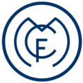
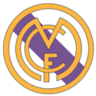
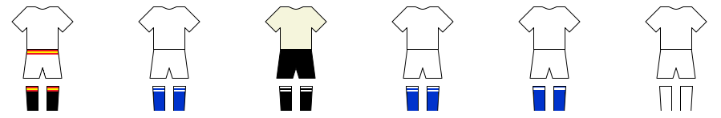

Real Madrid CF

Real Madrid Club de Fútbol (pengucapan bahasa Spanyol: ['al ma'ðɾið 'kluβ ðe 'futβol]; Royal Madrid Football Club), umumnya dikenal sebagai Real Madrid, adalah klub sepak bola profesional yang berbasis di Madrid, Spanyol.
Didirikan pada tahun 1902 sebagai Madrid Football Club, secara tradisional mengenakan kostum kandang putih. Kata Real ("dari kerajaan") Spanyol dan dianugerahkan ke klub oleh Raja Alfonso XIII pada tahun 1920 bersama-sama dengan mahkota kerajaan di lambang klub. Klub ini telah memainkan pertandingan kandang di Santiago Bernabéu dengan kapasitas 85.454 di pusat kota Madrid sejak tahun 1947.
Klub ini merupakan salah satu klub sepak bola terkaya di dunia dalam hal pendapatan, senilai €968,3 juta dan total aset yang senilai €7,2miliar (atau $7,2 miliar) di 2019.Ini adalah salah satu dari tiga klub untuk tidak pernah terdegradasi dari papan atas sepak bola Spanyol, bersama dengan Athletic Bilbao dan Barcelona club ini juga merupakan club dengan torehan piala UCL terbanyak. Real Madrid memiliki banyak persaingan lama, terutama El Clásico dengan Barcelona dan El Derbi madrileño dengan Atlético Madrid.
Klub ini memantapkan dirinya sebagai kekuatan utama dalam sepak bola Spanyol dan Eropa selama tahun 1950. Di dalam negeri, Klub ini juga merupakan salah satu klub terbaik abad ke-20 menurut FIFA. Klub ini menjuarai Liga Champions 3 musim berturut-turut dibawah kepelatihan Zinedine Zidane dan dengan mesin golnya yaitu pemain terbaik dunia Cristiano Ronaldo. Dalam kompetisi domestik, klub ini telah meraih 36 gelar La Liga (rekor), 20 gelar Piala Raja Spanyol, 13 Piala Super Spanyol, 1 Copa Eva Duarte, 1 Copa de la Liga. Di kompetisi tingkat Eropa dan Dunia, klub ini telah meraih 15 gelar Piala Champions Eropa/Liga Champions UEFA (rekor), 2 Piala Piala UEFA/Liga Eropa UEFA, 6 Piala Super UEFA, dan 9 kejuaraan dunia antar klub (3 Piala Interkontinental, 5 Piala Dunia Antarklub FIFA dan 1 Piala Ibero-American).
|  |  | |
| 1902 | 1908 | 1931 |
Lambang klub pertama Real Madrid adalah desain sederhana dengan sebuah jalinan dekoratif dan tiga huruf kapital yang dituliskan sebagai "MCF" yang merupakan singkatan dari Madrid Club de Fútbol yang dibalut warna biru gelap dalam kostum warna putih. Perubahan pertama lambang klub terjadi pada tahun 1908, ketika mereka mengadopsi bentuk yang lebih ramping dan penempatan huruf inisial klub di dalam lingkaran.Perubahan berikutnya dari logo kemudian tidak terjadi sampai Pedro Parages menjadi presiden klub pada tahun 1920. Pada saat itu, Raja Alfonso XIII memberikan nama tambahan bagi Madrid, yaitu "Real" yang diterjemahkan secara bebas sebagai "Kerajaan" yang kemudian membuat klub dikenal dengan nama "Real Madrid".Sebagai perubahannya, mahkota simbol kerajaan dari Alfonso ditambahkan ke bagian atas logo dan kemudian menjadi gaya tersendiri dari klub Real Madrid Club de Fútbol. Seiring pembubaran monarki pada tahun 1931, semua simbol-simbol kerajaan (mahkota di bagian atas logo dan kata-kata Real) dihilangkan. Mahkota kemudian digantikan oleh strip murbei gelap yang mencirikan Region Castile.Pada tahun 1941—dua tahun setelah berakhirnya Perang Saudara Spanyol—simbol dan tulisan "Corona Real" atau "Royal Crown" yang sempat dihilangkan, dipulihkan dan dipadukan dengan garis murbei Castile. Selain itu di bagian atas logo juga dibuat penuh warna, dengan warna emas yang paling signifikan, dan klub ini kembali disebut Real Madrid Club de Fútbol. Modifikasi terbaru di bagian atas logo terjadi pada tahun 2001 ketika klub ingin lebih menonjolan citra untuk abad ke-21 dengan menstandarkan bagian atas logonya. Salah satu modifikasi yang dilakukan adalah mengubah garis murbei biru tua dengan warna biru yang agak cerah.
|  | ||||||
| 1902 | 1908 | 1931 | 1902 | 1908 | 1931 | |
Warna tradisional kostum Real Madrid untuk pertandingan kandang adalah putih, meskipun awalnya mengadopsi garis miring biru di kaus mereka (desain itu disimpan di logo klub), tetapi sekarang ini desain tersebut tidak dipakai lagi. Kaus kaki pertama yang dipakai berwarna biru gelap. Kaus bergaris biru kemudian digantikan oleh kaus polos berwarna putih yang mengadopsi model dari klub Corinthians pada tahun 1902.Pada tahun yang sama, kaus kaki biru diganti dengan warna hitam. Pada awal 1940-an, manajemen tim mengganti model kostum mereka dengan menambahkan kancing pada kaus mereka dan penempatan logo klub di sebelah kiri yang bertahan sampai saat ini. Pada 23 November 1947, dalam pertandingan melawan Atlético Madrid di Stadion Metropolitan, Real Madrid menjadi tim Spanyol pertama yang mengenakan kaus bernomor. Sementara, warna tradisional kostum Real Madrid untuk pertandingan tandang adalah hitam atau terkadang ungu.
Perlengkapan klub saat ini diproduksi oleh Adidas yang kontraknya dimulai sejak tahun 1998. Kaus pertama Real Madrid disponsori oleh Zanussi, yang disepakati untuk musim 1982—1983, 1983—1984, dan 1984—1985. Setelah itu, Real Madrid disponsori oleh Parmalat dan Otaysa, sebelum kontrak jangka panjang dijalin bersama Teka pada tahun 1992. Pada tahun 2001, Real Madrid mengakhiri kontrak mereka dengan Teka dan untuk satu musim digunakan logo Realmadrid.com untuk mempromosikan situs web resmi klub. Kemudian, pada tahun 2002, mereka megadakan kesepakatan yang ditandatangani dengan Siemens Mobile dan pada tahun 2006, logo BenQ Siemens muncul di kaus klub. Kemudian sponsor berikutnya Real Madrid menjadi Bwin.com untuk masalah ekonomi BenQ Siemens. Sponsor saat ini adalah Fly Emirates yang saat ini adalah Emirates Fly Better.
| Periode | Pemasok Kostum | Sponsor di Kaos |
|---|---|---|
| 1980-1982 | Adidas | Tidak Ada |
| 1982-1985 | Zanussi | |
| 1985-1989 | Hummel | Parmalat |
| 1989-1991 | Reny Picot | |
| 1991-1992 | Otaysa | |
| 1992-1994 | Teka | |
| 1994-1998 | Kelme | |
| 1998-2001 | Adidas | |
| 2001-2002 | Realmadrid.com | |
| 2002-2005 | Siemens Mobile | |
| 2005-2006 | Siemens | |
| 2006-2007 | BenQ Siemens | |
| 2007-2011 | bwin.com | |
| 2011-2013 | ||
| 2013-2021 | Fly Emirates | |
| 2021-sekarang | Emirates Fly Better |
* Realmadrid.com diluncurkan sebagai sponsor kaus untuk mempromosikan situs web baru klub.
| Goal Keeper | Defender | Midfielder | Forward |
|---|---|---|---|
|
|
|
|
Aokwkwkwkwkwkwk Mahal2
Real Madrid merupakan klub dengan raihan trofi UEFA Champions League terbanyak di dunia.
Berikut daftar 4 klub peraih trofi UEFA Champions League terbanyak di dunia:
*jangan cari yang gaada adik-adik